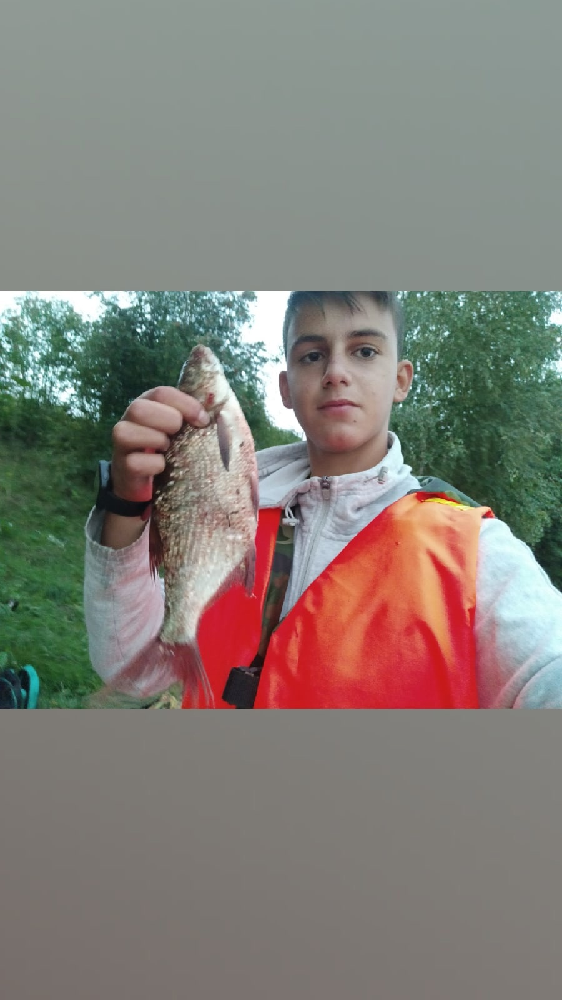
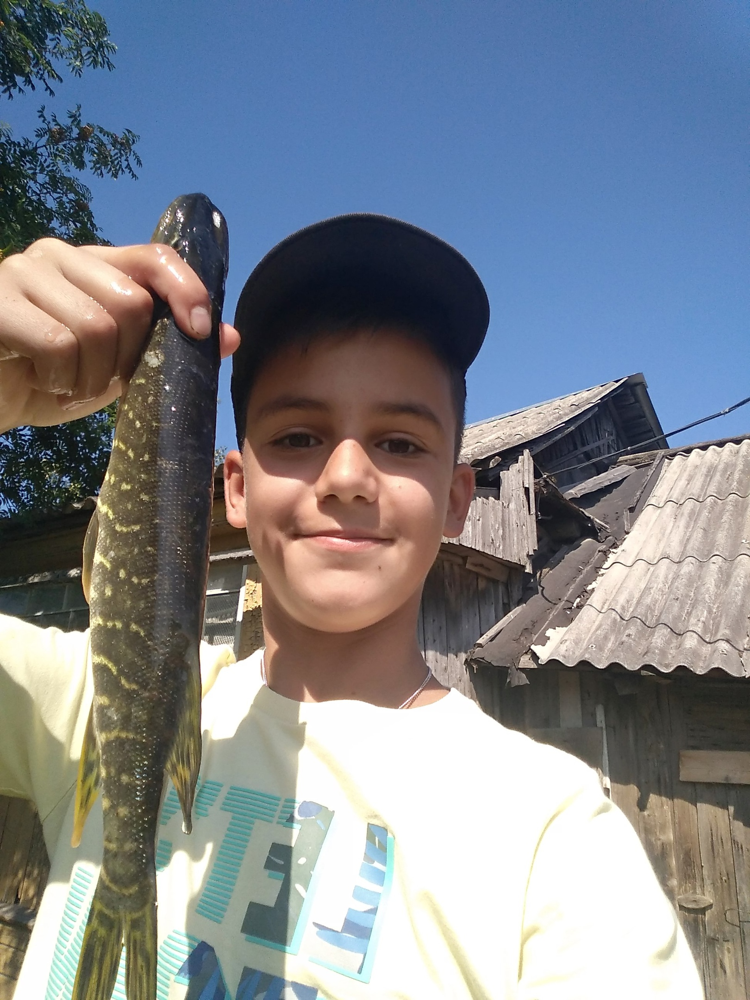
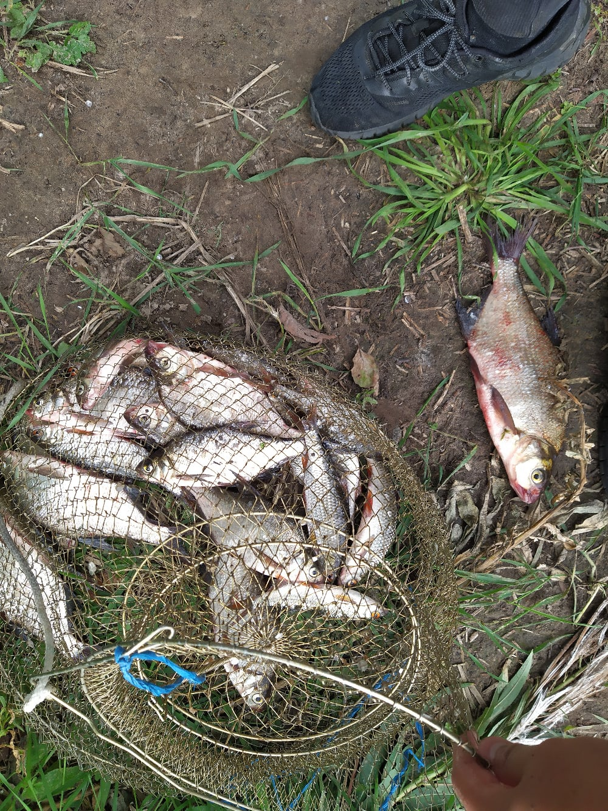

Hello. I will tell you about fishing. I have really enjoyed fishing since I was a kid. I fished in Russia and tried sea fishing in Spain. There are some pictures of fish I catched:
  
I buyed all my fishing equipment in this shop:
Fishing itemsIn Russia sometimes I went to winter fishing, on the ice: